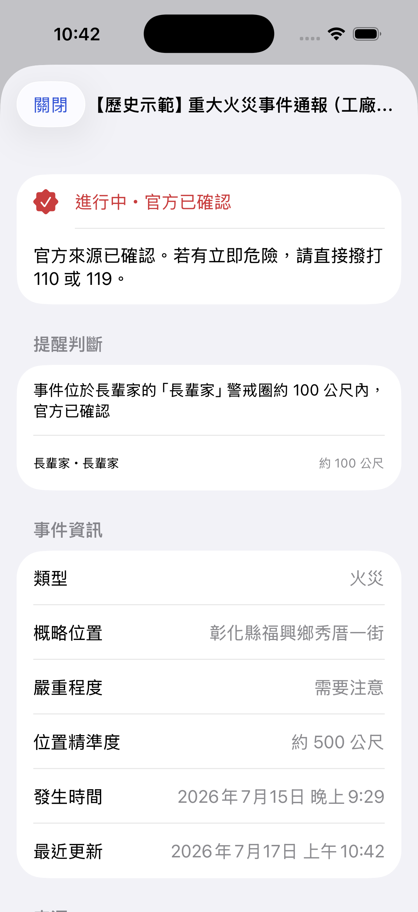
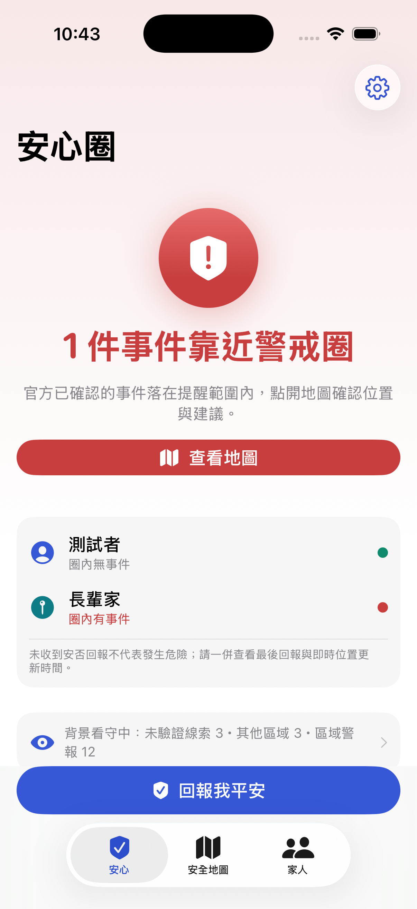
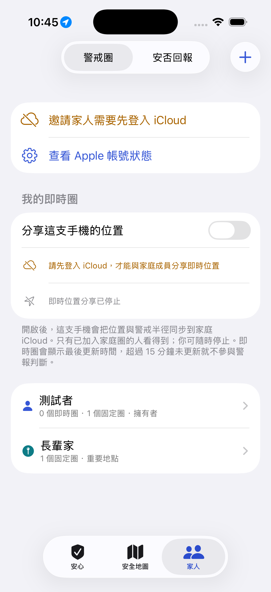
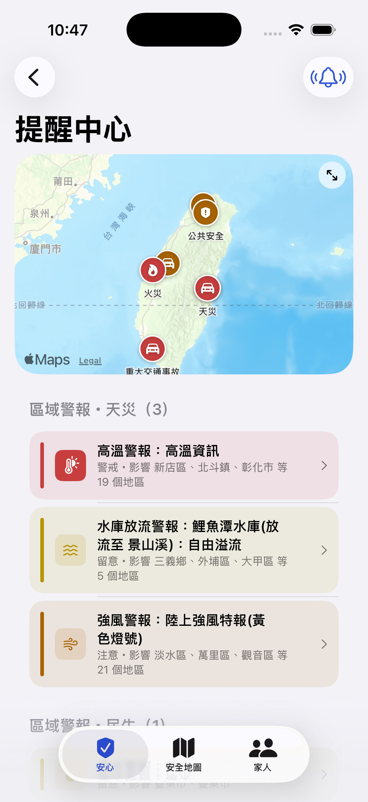
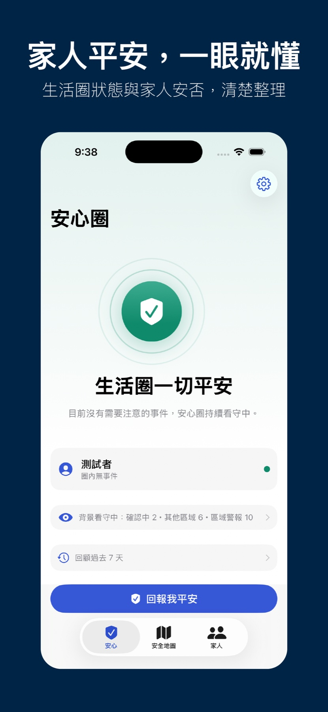
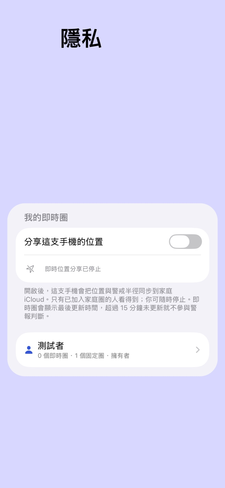
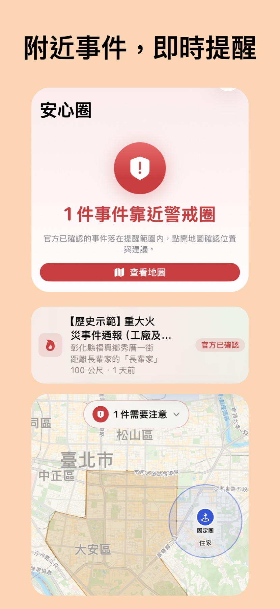

位置與警報分開看，仍不知道誰真的需要關心
家人會移動、資產不會；只看其中一種位置，仍可能漏掉真正相關的風險。
iOS FAMILY SAFETY競賽展示版本
安心圈把家人本人主動分享的最新位置，與長輩家、住家等固定警戒圈放進同一張安全地圖； 只有可信事件真正命中時，才提醒你採取行動。

01 / THE PROBLEM
家人正在移動，住家與重要資產留在原地；當火災、強風或停水發生時，位置工具與政府告警各自分散， 等到家人傳訊息，往往已經錯過最需要確認的時刻。
家人會移動、資產不會；只看其中一種位置，仍可能漏掉真正相關的風險。
即時圈跟著本人最新位置，固定圈守住資產；命中時說明來源、距離與下一步。
02 / THE SOLUTION
即時圈跟著本人自願分享的最新位置；固定圈留在住家與資產。兩者都只在可信事件命中時，轉成有理由的提醒。
每位家人只能在自己的手機上開啟，最新位置透過家庭 CKShare 分享；可隨時停止，不建立移動軌跡。
本人開啟 · 最後更新 · 15 分鐘過期為長輩家、住家、倉庫等重要地點設定名稱與提醒半徑，讓遠方風險也能被納入日常守護。
保存地點 · 自訂半徑 · 可隨時編輯只有官方確認或交叉驗證、且落在有效警戒圈的事件才推播；每一則都說明你為何收到。
來源標示 · 可信度 · 去重與時段判斷事件發生後，不必反覆來電；用一鍵安否回報讓家人知道狀況，讓關心真正得到回音。
家庭 iCloud · 安否備註 · 已讀回條本人決定是否分享最新位置；重要資產則設定保存地點與半徑。
NCDR 與政府資料經過整理、去重與可信度判斷。
看到哪個警戒圈受到影響、來源與概略距離。
查看官方資源，家人用安否回報完成關心閉環。
04 / NATIVE iOS
即時圈與固定圈清楚分流、狀態不只靠顏色、每筆提醒都有來源。SwiftUI 與 MapKit 的原生操作，讓資訊密度高，仍然清楚。
一眼確認警戒圈是否有事件，並直接前往安全地圖。

清楚顯示分享狀態、最後更新與固定圈數量，不把舊位置冒充現在位置。

重大資訊先排序，並用文字標籤表達警戒、注意與來源。

官方確認、概略位置、警戒圈距離與更新時間完整呈現。
05 / PRODUCT POSTERS
從安心總覽、本人控制的即時圈，到事件命中後的地圖提醒，完整呈現目前封版介面與產品界線。

生活圈狀態、家人安否與回報入口集中在安心首頁。

只向家庭 iCloud 分享最新位置，隨時停止，過期不參與判斷。

官方來源、受影響警戒圈、概略距離與地圖行動一次說清楚。
06 / ENGINEERING PROOF
所有對外主張都區分「已驗證」與「實機驗證中」，不把做完程式誤寫成做完證據。
只保留最新一筆與更新時間，不進入 HavenCircle 事件／推播中繼站。
375 個鄉鎮市區邊界與區域示警圖層。
避難收容處所與急救責任醫院，支援地圖與導航。
SwiftUI、MapKit、SwiftData 與 WidgetKit 完整整合。
實機完成位置品質閘門、序列化寫入與 CloudKit 讀回，陳舊低精度位置會被擋下。
CKShare、停止分享、位置過期與安否已實作，跨帳號雙機證據待完成。
APNs 中繼與 deep link 已實作，正式裝置收件流程驗證中。
07 / RESPONSIBLE DESIGN
即時圈只能由裝置持有人開啟，可隨時停止；家庭成員無法替別人啟用。
家庭 iCloud 只保留最新一筆位置與更新時間，不建立到訪或移動歷史。
超過 15 分鐘未更新會明確標示「位置已過期」，並排除警報判斷。
風險、可信度與分享狀態都有文字名稱，不要求使用者只靠顏色判斷。
社區線索沒有官方來源或交叉佐證時，不冒充正式警報。
08 / LEGAL & TRUST
法律與隱私不是頁尾裝飾。安心圈將資料用途、家庭使用規則、責任界線與刪除方式完整公開。
了解即時圈、固定圈、家庭 iCloud、推播中繼與網站會處理哪些資料，以及如何停止分享、撤回或刪除。
說明家庭邀請、身分與同意、安全資訊使用、禁止跟蹤或騷擾，以及停止使用的方式。
界定服務內容、第三方資料、可用性、智慧財產、責任與中華民國法律下的消費者權利。
安心圈不是緊急服務。通知可能受網路、iOS 背景排程或第三方資料影響而延遲。
若有立即危險、犯罪、火災、醫療或救援需求，請直接撥打 110 或 119，不要等待 App 通知或家人回覆。
HAVENCIRCLE / TEAM YAMAGATA
安心圈目前為競賽展示版本。歡迎評審、測試者與合作夥伴聯絡我們，取得 Demo 與最新驗證資訊。
{kind=link}
{kind=link}
{kind=link}